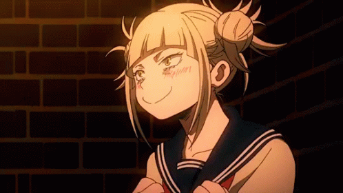

Marramiau
Holis, Pulpincha. Veo que ya has encontrado mi escondite! Jejeje :3

Bueno, ahora que me has encontrado confesaré supongo que dare un discurso sobre lo bonito que es el amor y esas cosas. Miau miau 💮
Ay ay ay plupeixon, cuantas cosas hemos pasado. Cuantas risas nos
hemos echado haciendo bobaliconadas en nuestro coral, cuantas veces hemos
dicho "hoy soy una almeja" y nos hemos quedado vagueando viendo alguna pelicula,
cuantas veces hemos ido a cuidar de la otra, para repararnos en esta relacion
simbiotica que tenemos.
Plupincha, en nuestra relacion yo soy el hongo y tu el alga, tu el
camarón y yo el gobio (un pez), yo la anemona y tu el cangrejo
ermitaño. Ya no hace falta que hable de peces payaso jsjsjsjs :3 quewoche


coño si el gif está roto xd
Ahora dame un bechito, que nunca me has dado uno :3 (Seguramente alguna de las dos estemos llorando ahora mismo)